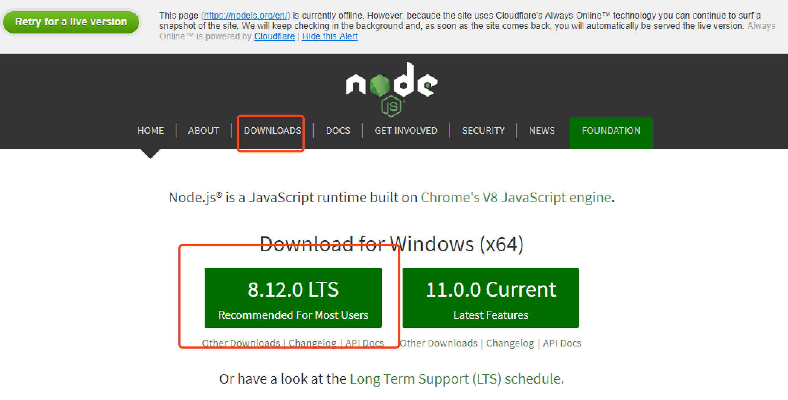
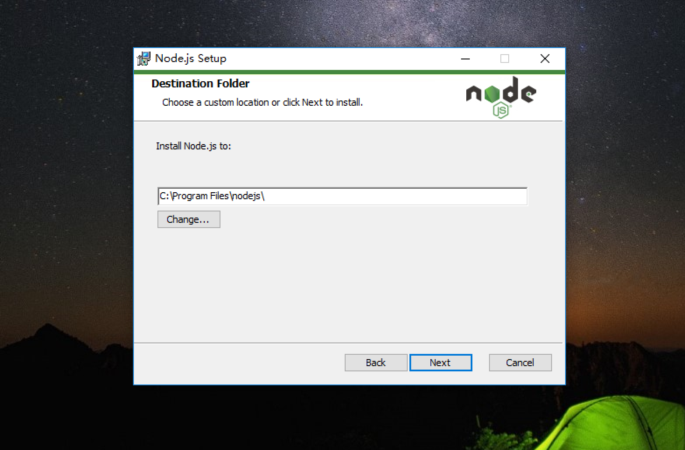

原文连接:https://www.cnblogs.com/wangyueping/p/11458266.html
Node.js是一个Javascript运行环境(runtime environment)，发布于2009年5月，由Ryan Dahl开发，实质是对Chrome V8引擎进行了封装。本文详细介绍了Node.js的安装和使用。
一、Node.js介绍
Node.js 不是一个 JavaScript 框架，不同于CakePHP、Django、Rails。Node.js 更不是浏览器端的库，不能与 jQuery、ExtJS 相提并论。Node.js 是一个让 JavaScript 运行在服务端的开发平台，它让 JavaScript 成为与PHP、Python、Perl、Ruby等服务端语言平起平坐的脚本语言。
二、Node.js安装
windows环境安装Node.js
在浏览器地址栏输入https://nodejs.org/en/, 进入Node.js官网后，点击下载左边的稳定版本，如下图所示：

下载完成之后，开始安装，点击Next：

Next

如果不需要修改安装路径，Next

Next
Install

打开命令行工具，开始->运行->cmd->回车, 输入node，如果提示如下，则安装成功，否则需要手动配置环境变量，或者重新安装，安装成功后，我们可以进行JavaScript语言测试：
Mac环境安装Node.js
直接使用brew包管理器进行安装，并根据提示添加环境变量，然后输入node进行测试：

以上就是Node.js分别在Windows和Mac环境下的安装介绍。
三、npm
任何一门计算机语言都包含了丰富的第三方库，npm就是JavaScript这门语言的第三方库管理工具，本文详细介绍了JavaScript的包管理工具，npm。
在计算机中安装好Node.js之后，默认已经安装好了npm包管理工具，我们可以输入npm命令进行测试：

使用npm包管理工具安装第三方库
安装好npm包管理工具之后，我们来介绍两种安装npm包的方式：全局安装和局部安装
全局安装
如果你想将该第三方库作为一个命令行工具，并且任何项目都可用，那么你应该将其安装到全局。使用这种安装方式，可以让你在任何目录下使用这个包，安装全局包的方式如下：
npm install -g <package>全局方式安装的npm包，全局可用。
本地安装方式一
npm init
npm install vue@2.5.17以上方式安装的npm包，只在当前目录下可用，该方式安装的包：
- 会把包安装到node_modules目录中
- 不会新增并修改package.json
- 运行npm install不会自动安装该包本地安装方式二
npm init
npm install vue@2.5.17 --save本地–save方式安装的npm包，只在当前目录下可用，该方式安装的包：
- 会把包安装到node_modules目录中
- 会在package.json的dependencies属性下添加包
- 运行npm install命令时，会自动安装包到node_modules目录中本地安装方式三
npm init
npm install vue@2.5.17 --save-dev采用上述第三种方式安装的npm包，只在当前目录下可用，该方式安装的包:
- 会把包安装到node_modules目录中
- 会在package.json的Devdependencies属性下添加包
- 运行npm install命令时，不会自动安装包到node_modules目录中卸载全局包
`npm uninstall <package> -g`卸载本地
npm uninstall <package> -S, --save: Package will be removed from your dependencies.
npm uninstall <package> -D, --save-dev: Package will be removed from your devDependencies.通过npm安装JavaScript第三方库时，访问的是国外的站点，访问速度会比较慢，此时我们可以使用国内的镜像站，cnpm，详细的使用方式请参考http://npm.taobao.org/。
安装cnpm后，使用方式如下：
cnpm install vue以上就是npm包的安装和卸载介绍。
但是，当我们需要维护多个独立的项目环境时, 比如项目一需要Vue2.5.10支持，而项目二需要最新的Vue2.5.17，我们应该分别为项目一和项目二创建独立的、与外界隔离的第三方库环境。而不是在当前目录下使用本地或者全局方式安装npm包。
我们应该创建一个文件夹，并将该文件夹初始化为npm包环境，使用方式如下：
mkdir myproject
cd myproject
npm init使用npm init初始化项目环境的时候，会出现如下提示：
Press ^C at any time to quit.
package name: (myproject)
version: (1.0.0)
description:
entry point: (index.js)
test command:
git repository:
keywords:
author:
license: (ISC)
About to write to /Users/pizza/Downloads/myproject/package.json:
{
"name": "myproject",
"version": "1.0.0",
"description": "",
"main": "index.js",
"scripts": {
"test": "echo \"Error: no test specified\" && exit 1"
},
"author": "",
"license": "ISC"
}
Is this OK? (yes)按需填入上述信息，最后输入yes，项目环境初始化完毕。如果使用默认信息，可以直接使用npm init -y进行初始化。
上面的信息依次是：
name 项目名称
version 项目的版本号
description 项目的描述信息
entry point 项目的入口文件
test command 项目启动时脚本命令
git repository 如果你有 Git 地址，可以将这个项目放到你的 Git 仓库里
keywords 关键词
author 作者
license 项目要发行的时候需要的证书查看特定package的信息
npm ls <package>更新package
npm update <package>搜索package
`npm search <package>`package.json详解
随着项目的不断丰富，package.json文件也会跟随着不断的复杂，接下来，介绍几个在上述没有的条目:
"private": true,
"dependencies": {
"antd": "^2.11.1",
"classnames": "^2.2.5"
},
"devDependencies": {
"axios": "^0.15.3",
"babel-eslint": "^6.1.2"
},
"bin": {
"dk-cli": "./bin/dk-cli.js"
},
"scripts": {
"start": "node index.js"
},
"engines": {
"node": ">=6.9.0",
"npm": ">=3.10.10"
}
"publishConfig": {
"registry": "http://gongsineibu/nexus/repository/npm-hosted/"
}private可选字段，布尔值。如果 private 为 true，npm 会拒绝发布。这可以防止私有 repositories 不小心被发布出去;dependencies与devDependencies在开发阶段，我们需要对开发的模块进行单元测试，这时在开发环境 devDependencies 下就要安装单元测试模块 Mocha。
在生产环境 dependencies，用户直接使用项目，此时项目的开发已全部完成。这时就不需要单元测试模块了，再加上只会影响性能。
- dependencies 指定了项目生产环境时所依赖的模块,
- devDependencies 制定了项目开发环境时所依赖的模块。
scripts该字段指定了运行脚本命令的npm命令行缩写，比如start指定了运行npm run start时，所要执行的命令。下面的设置指定了npm run dev、npm run bulid、npm run unit、npm run test、npm run lint时，所要执行的命令；
"scripts": { "dev": "node build/dev-server.js", "build": "node build/build.js", "unit": "cross-env BABEL_ENV=test karma start test/unit/karma.conf.js --single-run", "test": "npm run unit", "lint": "eslint --ext .js,.vue src test/unit/specs" }engines字段指定依赖的node版本publishConfig当我们开发完自己的项目想要将它发布到 Npm 仓库就需要使用这个属性。默认情况下我们是往 Npm 公共仓库中发布包，默认地址是：
https://www.npmjs.com/，此时在package.json文件中可以不加这个属性。但是如果公司内部搭建了 Npm 私有仓库，此时发布包就不是往
https://www.npmjs.com/这个地址上发布了，而是公司内部提供的地址，如：http://gongsineibu/nexus/repository/npm-hosted/。此时配置如下："publishConfig": { "registry": "http://gongsineibu/nexus/repository/npm-hosted/" }publicConfig字段决定了我们的包发布到哪里。
关于npm的介绍到这里就结束